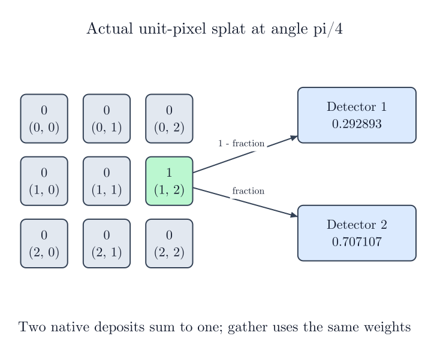
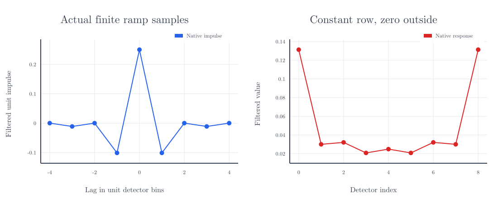
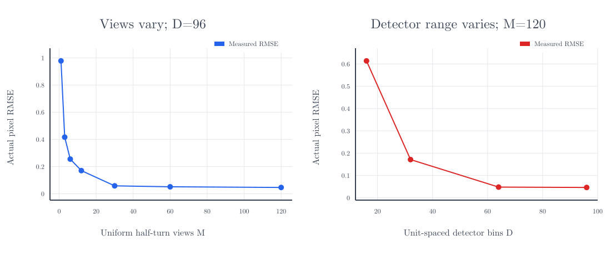
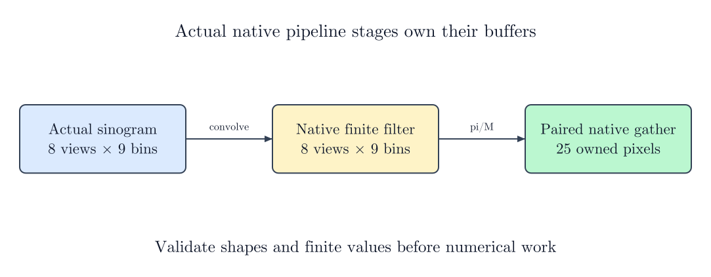

Filtered Back-Projection: Finite Geometry, Filtering and Reconstruction
Abstract
Recover a square image from projection samples taken at several angles. Each projection combines information from many pixels, so simply spreading it back over the image produces blur rather than an inverse. Filtered back-projection sharpens the projection rows before gathering them onto the image. We begin with one off-center pixel and its actual detector weights, then inspect the finite ramp response and retain the original 96 × 96 disk with 120 views. Native APIs construct the phantom and angles and expose the actual filter/gather stages. Image, sinogram and profile plots accompany measured errors, sampling controls and an explicit distinction between an ideal inversion formula and this finite discrete implementation.
One pixel deposits into two detector bins
The native image is a row-major N × N array. Its centered coordinates are x=c−(N−1)/2 and y=r−(N−1)/2 in pixel-spacing units. At angle theta, a detector coordinate is s=x cos(theta)+y sin(theta)+(D−1)/2. The native forward operator deposits the pixel value into floor(s) and floor(s)+1 with weights 1−fraction and fraction; bins outside 0..D−1 get nothing. This is a finite linear pixel splat, rather than exact integration of a piecewise-constant image along every ray.
For N=3,D=3 and a unit pixel at(row1,column2), x=1,y=0. At theta=pi/4, s=1+1/sqrt(2), so bins one and two receive approximately0.292893 and 0.707107. Four uniformly spaced angles preserve the unit mass in this tiny case. The figure uses those actual native outputs, and the table includes all four views.
The exposed back_projection gathers with the same weights, then multiplies by pi/M. If A denotes the finite splat matrix, B=(pi/M)A-transpose in real arithmetic. The dot-product check below tests that paired relationship on the actual tiny input. A transpose is not an inverse.
#include <dm/dm.hpp>
namespace dm=datamunge;
int main(){
std::filesystem::create_directories("build");
std::vector<double>image(9);image[5]=1;const auto angles=dm::algorithms::parallel_projection_angles(4);const auto sino=dm::algorithms::radon_transform(image,3,angles,3);std::print("| actual angle degrees | detector 0 | detector 1 | detector 2 | row sum |\n| ---: | ---: | ---: | ---: | ---: |\n");double lhs=0;for(std::size_t v=0;v<sino.size();++v){const auto&row=sino[v];std::print("| {:.1f} | {:.9f} | {:.9f} | {:.9f} | {:.9f} |\n",angles[v]*180/std::numbers::pi,row[0],row[1],row[2],std::accumulate(row.begin(),row.end(),0.));lhs+=std::inner_product(row.begin(),row.end(),row.begin(),0.);}const auto back=dm::algorithms::back_projection(sino,3,angles,3);const double rhs=(angles.size()/std::numbers::pi)*std::inner_product(image.begin(),image.end(),back.begin(),0.);std::print("\nScaled-adjoint check: dot(Ax,Ax) {:.12f}; (M/pi)*dot(x,B(Ax)) {:.12f}; absolute gap {:.3e}.\n",lhs,rhs,std::abs(lhs-rhs));
dm::graphics::Diagram g(58,1100);dm::graphics::DiagramNodeStyle box;box.width=1.35;box.height=1.2;box.font_size=22;for(int r=0;r<3;++r)for(int c=0;c<3;++c){box.fill=image[r*3+c]?dm::graphics::RGB{187,247,208}:dm::graphics::RGB{226,232,240};g.node(std::format("p{}{}",r,c),{1.8*c,-1.8*r},std::format("{}\n({}, {})",int(image[r*3+c]),r,c),box);}box.width=3.4;box.height=1.6;box.fill={219,234,254};g.node("d1",{9,.1},std::format("Detector 1\n{:.6f}",sino[1][1]),box).node("d2",{9,-3.3},std::format("Detector 2\n{:.6f}",sino[1][2]),box).edge("p12","d1","1 - fraction").edge("p12","d2","fraction").text({4.9,2.6},"Actual unit-pixel splat at angle pi/4",27).text({4.9,-6},"Two native deposits sum to one; gather uses the same weights",24).save_svg("build/fbp_tiny.svg");if(std::abs(lhs-rhs)>1e-12||std::abs(sino[1][1]+sino[1][2]-1)>1e-15)throw std::runtime_error("tiny geometry check failed");
}| actual angle degrees | detector 0 | detector 1 | detector 2 | row sum |
|---|---|---|---|---|
| 0.0 | 0.000000000 | 0.000000000 | 1.000000000 | 1.000000000 |
| 45.0 | 0.000000000 | 0.292893219 | 0.707106781 | 1.000000000 |
| 90.0 | 0.000000000 | 1.000000000 | 0.000000000 | 1.000000000 |
| 135.0 | 0.707106781 | 0.292893219 | 0.000000000 | 1.000000000 |
Scaled-adjoint check: dot(Ax,Ax) 3.171572875254; (M/pi)*dot(x,B(Ax)) 3.171572875254; absolute gap 0.000e+00.

The ramp response and the finite filter actually used
In the ideal parallel-beam setting, a projection's one-dimensional Fourier transform samples a radial line of the image's two-dimensional transform. Writing Fourier inversion in polar coordinates introduces a frequency magnitude factor. Filtering each projection by that ramp, then integrating backprojected filtered samples over a half turn, gives the ideal inversion. The normalizing constants depend on the frequency convention.
Here use frequency nu in cycles per detector-spacing unit and the inverse transform exp(2 pi i nu t). Bandlimit the ramp to |nu|≤1/2. Its sampled impulse response is h[k]=integral from−1/2 to1/2 of |nu|exp(2 pi i nu k)dnu. Thus h[0]=1/4, h[k]=−1/(pi²k²) for odd k, and zero for nonzero even k. These are the unit-spacing samples in Kak and Slaney, equation61.
The native ram_lak_filter performs the original direct convolution with lags −(D−1)..D−1, zero extension and the original summation order. It is not circular FFT convolution. The impulse response below comes from a native filtered unit impulse; the other panel filters a finite constant row. Its nonzero response shows that a finite zero-extended constant row is not an infinite DC signal annihilated by an ideal ramp.
#include <dm/dm.hpp>
namespace dm=datamunge;
int main(){
std::filesystem::create_directories("build");
std::vector<double>impulse(9);impulse[4]=1;const auto response=dm::algorithms::ram_lak_filter({impulse}),constant=dm::algorithms::ram_lak_filter({std::vector<double>(9,1)});std::vector<double>lag,x;std::print("| actual lag from impulse | filtered impulse | filtered finite constant |\n| ---: | ---: | ---: |\n");for(int d=0;d<9;++d){lag.push_back(d-4);x.push_back(d);std::print("| {} | {:.12f} | {:.12f} |\n",d-4,response[0][d],constant[0][d]);}std::print("\nFinite constant: edge {:.12f}; center {:.12f}; center is nonzero {}.\n",constant[0].front(),constant[0][4],constant[0][4]!=0);
auto a=dm::graphics::RPlot::create(),b=dm::graphics::RPlot::create();a.line(lag,response[0],"Native impulse",{37,99,235},2).points(lag,response[0],"",{37,99,235},5).title("Actual finite ramp samples").x_label("Lag in unit detector bins").y_label("Filtered unit impulse").size(550,430);b.line(x,constant[0],"Native response",{220,38,38},2).points(x,constant[0],"",{220,38,38},5).title("Constant row, zero outside").x_label("Detector index").y_label("Filtered value").size(550,430);dm::graphics::RLayout::create(1,2).size(1100,460).add(a).add(b).save_svg("build/fbp_filter.svg");if(response[0][4]!=.25||constant[0][4]==0)throw std::runtime_error("finite filter check failed");
}| actual lag from impulse | filtered impulse | filtered finite constant |
|---|---|---|
| -4 | 0.000000000000 | 0.131300280460 |
| -3 | -0.011257909294 | 0.029979096818 |
| -2 | 0.000000000000 | 0.032046876076 |
| -1 | -0.101321183642 | 0.020788966782 |
| 0 | 0.250000000000 | 0.024841814128 |
| 1 | -0.101321183642 | 0.020788966782 |
| 2 | 0.000000000000 | 0.032046876076 |
| 3 | -0.011257909294 | 0.029979096818 |
| 4 | 0.000000000000 | 0.131300280460 |
Finite constant: edge 0.131300280460; center 0.024841814128; center is nonzero true.

The original 96 × 96 disk,120 views and144 detectors
The disk has radius 22 pixel units and value one. disk_phantom and parallel_projection_angles replace the report-local setup loops. The original forward and filtered-backprojection signatures remain available. This program exposes the same actual pipeline as forward splat, native finite filter and paired gather, then verifies equality with the wrapper. The original central row profile is retained alongside truth, sinogram and reconstruction images.
Pearson correlation uses the existing native OnlineCovariance accumulator. RMSE and maximum absolute error are ordinary reductions of actual pixel residuals. Correlation measures shape agreement under centering/scaling; it does not certify gain, offset or pointwise accuracy. The original rounded correlation 0.9941 and center 0.9860 remain, while additional error metrics make their limits visible. The truth and reconstruction images use equal row/column scales and share a displayed [0,1.1] color scale; negative values are still present in the numeric metrics and profile even when clipped by that display scale.
The image palette uses column and row indices as coordinates. Plot grids are arranged z[column][row] for RPlot::image; that presentation transpose does not change the native row-major image. The sinogram's axes are centered detector coordinate and actual angle in degrees.
#include <dm/dm.hpp>
namespace dm=datamunge;
int main(){
std::filesystem::create_directories("build");
constexpr int N=96,D=144;const auto image=dm::algorithms::disk_phantom(N,22),angles=dm::algorithms::parallel_projection_angles(120);const auto sino=dm::algorithms::radon_transform(image,N,angles,D),filtered=dm::algorithms::ram_lak_filter(sino);const auto rec=dm::algorithms::back_projection(filtered,N,angles,D);const bool same=rec==dm::algorithms::filtered_back_projection(sino,N,angles,D);dm::algorithms::OnlineCovariance covariance;double squared=0,maximum=0;for(std::size_t i=0;i<image.size();++i){covariance.add(image[i],rec[i]);const double error=rec[i]-image[i];squared+=error*error;maximum=std::max(maximum,std::abs(error));}std::print("Original phantom {}x{}; views {}; detectors {}; correlation {:.4f}; center truth {:.1f}; center reconstruction {:.4f}.\n",N,N,angles.size(),D,covariance.correlation(),image[(N/2)*N+N/2],rec[(N/2)*N+N/2]);std::print("Actual residuals: RMSE {:.9f}; maximum absolute {:.9f}; explicit pipeline equals legacy-signature wrapper {}.\n",std::sqrt(squared/image.size()),maximum,same);
std::vector<double>xy(N),detectors(D),degrees(angles.size()),truth_profile,rec_profile;std::iota(xy.begin(),xy.end(),0);for(int d=0;d<D;++d)detectors[d]=d-(D-1)/2.;for(std::size_t v=0;v<angles.size();++v)degrees[v]=angles[v]*180/std::numbers::pi;std::vector<std::vector<double>>truth_grid(N,std::vector<double>(N)),rec_grid=truth_grid,sino_grid(D,std::vector<double>(angles.size()));for(int r=0;r<N;++r)for(int c=0;c<N;++c){truth_grid[c][r]=image[r*N+c];rec_grid[c][r]=rec[r*N+c];}double sino_max=0;for(std::size_t v=0;v<sino.size();++v)for(int d=0;d<D;++d){sino_grid[d][v]=sino[v][d];sino_max=std::max(sino_max,sino[v][d]);}for(int c=0;c<N;++c){truth_profile.push_back(image[(N/2)*N+c]);rec_profile.push_back(rec[(N/2)*N+c]);}std::print("Sinogram display range [0,{:.6f}]; shared truth/reconstruction display range [0,1.1].\n",sino_max);
const auto palette=dm::graphics::viridis_colors(64);auto truth=dm::graphics::RPlot::create(),reconstruction=dm::graphics::RPlot::create(),views=dm::graphics::RPlot::create(),profile=dm::graphics::RPlot::create();truth.image(xy,xy,truth_grid,palette,0,1.1).title("Truth, shared scale [0,1.1]").x_label("Column").y_label("Row").size(590,460).margins(125,125,45,75).x_limits(-.5,N-.5).y_limits(-.5,N-.5);reconstruction.image(xy,xy,rec_grid,palette,0,1.1).title("FBP, shared scale [0,1.1]").x_label("Column").y_label("Row").size(590,460).margins(125,125,45,75).x_limits(-.5,N-.5).y_limits(-.5,N-.5);views.image(detectors,degrees,sino_grid,palette,0,sino_max).title("Actual sinogram").x_label("Centered detector coordinate").y_label("Angle in degrees") .size(590,460);profile.line(xy,truth_profile,"Truth",{30,30,30},2.5).line(xy,rec_profile,"FBP",{37,99,235},1.8).title("Original central row profile").x_label("Column").y_label("Pixel value") .size(590,460);dm::graphics::RLayout::create(2,2) .size(1180,970).title("Original 96 × 96 disk; 120 views; 144 detectors").add(truth).add(views).add(reconstruction).add(profile).save_svg("build/fbp_original.svg");if(!same||covariance.correlation()<.99)throw std::runtime_error("original reconstruction check failed");
}Original phantom 96x96; views 120; detectors 144; correlation 0.9941; center truth 1.0; center reconstruction 0.9860. Actual residuals: RMSE 0.040605776; maximum absolute 0.393672622; explicit pipeline equals legacy-signature wrapper true. Sinogram display range [0,47.472042]; shared truth/reconstruction display range [0,1.1].

Sampling changes measured error; correlation can hide gain error
The next controlled experiment uses the64 × 64, radius 14 disk from the native test. First vary only the number of uniform half-turn views while keeping96 detectors. Then keep120 views and vary the detector range. Finite detector support can truncate projection mass; it also limits the filtered projection coordinates available during gather. Capturing all nonzero forward mass is therefore not by itself a certificate of identical full reconstructions. Every displayed reconstruction calls the native FBP API.
These errors describe a particular synthetic image, unit detector spacing, finite interpolation/filter and angular rectangle rule. They are neither an exact inverse theorem nor a generic monotone error bound. The fixed pi/M gather weight assumes the ordinary full-half-turn uniform grid. Arbitrary finite caller angles are accepted by the API but receive those same weights; no adaptive quadrature is inferred.
Finally compare r with2r+0.3 on the original 96 × 96 problem. Positive affine transformation leaves Pearson correlation unchanged while RMSE changes substantially. This is an executed control for interpreting the original correlation claim.
#include <dm/dm.hpp>
namespace dm=datamunge;
int main(){
std::filesystem::create_directories("build");
constexpr int N=64;const auto image=dm::algorithms::disk_phantom(N,14);const double mass=std::accumulate(image.begin(),image.end(),0.);std::vector<double>views_x,views_error,detector_x,detector_error;std::print("| views M, D=96 | actual correlation | actual RMSE | maximum pixel error |\n| ---: | ---: | ---: | ---: |\n");for(std::size_t M:{1,3,6,12,30,60,120}){const auto angles=dm::algorithms::parallel_projection_angles(M);const auto sino=dm::algorithms::radon_transform(image,N,angles,96);const auto r=dm::algorithms::filtered_back_projection(sino,N,angles,96);dm::algorithms::OnlineCovariance cov;double sum=0,maximum=0;for(std::size_t i=0;i<r.size();++i){cov.add(image[i],r[i]);const double e=r[i]-image[i];sum+=e*e;maximum=std::max(maximum,std::abs(e));}const double rmse=std::sqrt(sum/r.size());std::print("| {} | {:.9f} | {:.9f} | {:.9f} |\n",M,cov.correlation(),rmse,maximum);views_x.push_back(M);views_error.push_back(rmse);}
std::print("\n| detectors D, M=120 | mean retained projection mass / truth mass | actual correlation | actual RMSE |\n| ---: | ---: | ---: | ---: |\n");for(int D:{16,32,64,96}){const auto angles=dm::algorithms::parallel_projection_angles(120);const auto s=dm::algorithms::radon_transform(image,N,angles,D);const auto r=dm::algorithms::filtered_back_projection(s,N,angles,D);dm::algorithms::OnlineCovariance cov;double total=0,squared=0;for(const auto&row:s)total+=std::accumulate(row.begin(),row.end(),0.);for(std::size_t i=0;i<r.size();++i){cov.add(image[i],r[i]);const double e=r[i]-image[i];squared+=e*e;}const double rmse=std::sqrt(squared/r.size());std::print("| {} | {:.9f} | {:.9f} | {:.9f} |\n",D,total/(angles.size()*mass),cov.correlation(),rmse);detector_x.push_back(D);detector_error.push_back(rmse);}
const auto truth=dm::algorithms::disk_phantom(96,22),angles=dm::algorithms::parallel_projection_angles(120);const auto r=dm::algorithms::filtered_back_projection(dm::algorithms::radon_transform(truth,96,angles,144),96,angles,144);dm::algorithms::OnlineCovariance raw,affine;double raw2=0,affine2=0;for(std::size_t i=0;i<r.size();++i){const double changed=2*r[i]+.3;raw.add(truth[i],r[i]);affine.add(truth[i],changed);raw2+=(r[i]-truth[i])*(r[i]-truth[i]);affine2+=(changed-truth[i])*(changed-truth[i]);}std::print("\nGain/offset control: raw correlation {:.9f}; transformed correlation {:.9f}; raw RMSE {:.9f}; transformed RMSE {:.9f}.\n",raw.correlation(),affine.correlation(),std::sqrt(raw2/r.size()),std::sqrt(affine2/r.size()));
auto a=dm::graphics::RPlot::create(),b=dm::graphics::RPlot::create();a.line(views_x,views_error,"Measured RMSE",{37,99,235},2).points(views_x,views_error,"",{37,99,235},5).title("Views vary; D=96").x_label("Uniform half-turn views M").y_label("Actual pixel RMSE").size(550,430);b.line(detector_x,detector_error,"Measured RMSE",{220,38,38},2).points(detector_x,detector_error,"",{220,38,38},5).title("Detector range varies; M=120").x_label("Unit-spaced detector bins D").y_label("Actual pixel RMSE").size(550,430);dm::graphics::RLayout::create(1,2).size(1100,460).add(a).add(b).save_svg("build/fbp_sampling.svg");if(std::abs(raw.correlation()-affine.correlation())>1e-12||affine2<=raw2)throw std::runtime_error("correlation scale control failed");
}| views M, D=96 | actual correlation | actual RMSE | maximum pixel error |
|---|---|---|---|
| 1 | 0.356047551 | 0.977453678 | 3.889832682 |
| 3 | 0.641329168 | 0.416344674 | 2.189396483 |
| 6 | 0.806944099 | 0.254836694 | 1.110672659 |
| 12 | 0.900327395 | 0.170219665 | 0.536621073 |
| 30 | 0.986696751 | 0.058145085 | 0.356952369 |
| 60 | 0.989757078 | 0.051197748 | 0.380201279 |
| 120 | 0.991720010 | 0.046218451 | 0.365484742 |
| detectors D, M=120 | mean retained projection mass / truth mass | actual correlation | actual RMSE |
|---|---|---|---|
| 16 | 0.685428566 | 0.819805624 | 0.613855037 |
| 32 | 1.000000000 | 0.983682209 | 0.171216966 |
| 64 | 1.000000000 | 0.991357254 | 0.047894825 |
| 96 | 1.000000000 | 0.991720010 | 0.046218451 |
Gain/offset control: raw correlation 0.994051437; transformed correlation 0.994051437; raw RMSE 0.040605776; transformed RMSE 0.596190923.

Checked inputs and owned pipeline outputs
Positive dimensions, exact N*N pixels, matched rectangular sinograms and nonempty finite angle lists are validated before numerical work/output allocation. All pixel and projection inputs must be finite. Detector coordinates outside the supported interpolation range are skipped before floor-to-int conversion; pixel/kernel/sinogram geometry uses checked sizes. A finite-input accumulation that becomes nonfinite raises overflow_error. The original empty-image call produced an invalid read; the original zero-angle reconstruction returned zeros without projection data. Its nominal pi/M normalization is undefined at M=0. Both cases now reject as invalid controls. Standalone filtering accepts an empty sinogram and returns empty output.
All stage outputs own their buffers. For M views,D detector bins and N × N pixels, forward storage is O(MD), direct filtering uses O(MD) output plus O(D) kernel, and gather uses O(N²) output. FBP takes O(MD²+MN²) word work, with temporary filtered rows and the ordinary output image. These buffers are actual stage outputs, rather than an optional explanatory history. There is no capture-record quota, byte-serialization format or physical calibration implied by the numeric arrays.
#include <dm/dm.hpp>
namespace dm=datamunge;
int main(){
std::filesystem::create_directories("build");
int invalid=0;try{(void)dm::algorithms::radon_transform({},2,{0},3);}catch(const std::invalid_argument&){++invalid;}try{(void)dm::algorithms::filtered_back_projection({},1,{},1);}catch(const std::invalid_argument&){++invalid;}try{(void)dm::algorithms::ram_lak_filter({{1},{1,2}});}catch(const std::invalid_argument&){++invalid;}try{(void)dm::algorithms::radon_transform({1},1,{std::numeric_limits<double>::quiet_NaN()},1);}catch(const std::invalid_argument&){++invalid;}bool geometry=false,overflow=false;try{(void)dm::algorithms::disk_phantom(INT_MAX,1);}catch(const std::length_error&){geometry=true;}try{(void)dm::algorithms::back_projection({{std::numeric_limits<double>::max()}},1,{0},1);}catch(const std::overflow_error&){overflow=true;}std::print("Checked controls: invalid shape/empty-angle/ragged/nonfinite-angle rejections {}/4; oversized image rejects {}; finite-input gather overflow rejects {}.\n",invalid,geometry,overflow);std::print("Standalone empty filter returns {} rows.\n",dm::algorithms::ram_lak_filter({}).size());
auto image=dm::algorithms::disk_phantom(5,1.2);const auto angles=dm::algorithms::parallel_projection_angles(8);auto s=dm::algorithms::radon_transform(image,5,angles,9);const auto original_s=s;auto filtered=dm::algorithms::ram_lak_filter(s);const auto original_filtered=filtered;const auto rec=dm::algorithms::back_projection(filtered,5,angles,9);image[12]=99;s[0][4]=99;filtered[0][4]=99;std::print("Owned stages: retained sinogram center {:.6f}; retained filtered center {:.6f}; retained reconstruction center {:.6f}; later edits are 99.\n",original_s[0][4],original_filtered[0][4],rec[12]);
dm::graphics::Diagram g(55,1100);dm::graphics::DiagramNodeStyle box;box.width=4.6;box.height=1.9;box.font_size=23;box.fill={219,234,254};g.node("s",{0,0},std::format("Actual sinogram\n{} views × {} bins",original_s.size(),original_s.front().size()),box);box.fill={254,243,199};g.node("h",{7,0},std::format("Native finite filter\n{} views × {} bins",original_filtered.size(),original_filtered.front().size()),box);box.fill={187,247,208};g.node("b",{14,0},std::format("Paired native gather\n{} owned pixels",rec.size()),box).edge("s","h","convolve").edge("h","b","pi/M").text({7,3},"Actual native pipeline stages own their buffers",27).text({7,-3},"Validate shapes and finite values before numerical work",25).save_svg("build/fbp_controls.svg");if(invalid!=4||!geometry||!overflow||original_s[0][4]==99||original_filtered[0][4]==99||!std::isfinite(rec[12]))throw std::runtime_error("input/ownership controls failed");
}Checked controls: invalid shape/empty-angle/ragged/nonfinite-angle rejections 4/4; oversized image rejects true; finite-input gather overflow rejects true. Standalone empty filter returns 0 rows. Owned stages: retained sinogram center 3.000000; retained filtered center 0.547358; retained reconstruction center 1.152633; later edits are 99.

Verification and references
The original valid numerical behavior is retained across 60,188 frozen floating-bit records from 168 small signed-pixel fixtures and the original 64 × 64 and 96 × 96 disk cases, plus all five original full-program output lines. Ten strict sanitizer cases compare the finite operators against an independent dense hat-basis matrix and analytical convolution matrix, check 300 seeded scaled-adjoint/linearity fixtures, shape/finite/capacity controls, clipping, rounded angles, finite overflow and owned outputs. The public Doxygen examples compile and their displayed output is checked.
A. C. Kak and M. Slaney, [Principles of Computerized Tomographic Imaging,chapter3](https://engineering.purdue.edu/~malcolm/pct/CTI_Ch03.pdf), IEEE Press, 1988,sections 3.1–3.3,especially equations 45 and 61,describe the parallel-beam geometry,interpolated backprojection and sampled ramp filter. The native finite pixel splat,zero extension,unit spacing and angular weights are specified above. Ideal continuous inversion is not a claim that this finite A-transpose H A equals the identity.
G. N. Ramachandran and A. V. Lakshminarayanan, [Three-dimensional Reconstruction from Radiographs and Electron Micrographs: Application of Convolutions instead of Fourier Transforms](https://doi.org/10.1073/pnas.68.9.2236), PNAS 68(9), 1971, pp.2236–2240,introduced convolution-based reconstruction. The native implementation's precise coefficient convention is checked against Kak and Slaney's sampled unit-spacing expression.